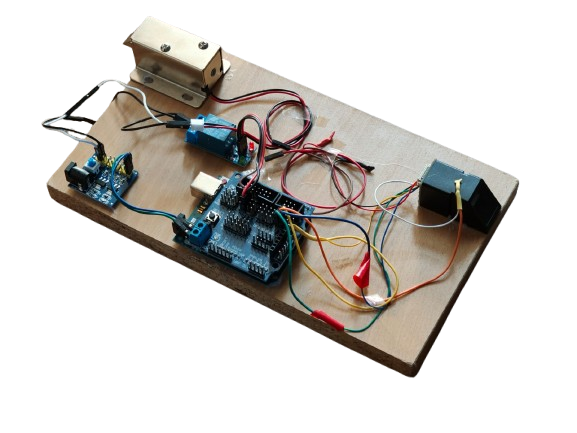
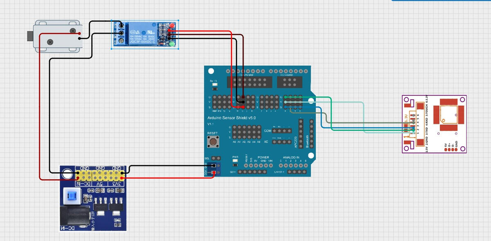

Cum functioneaza
Flux simplu
- Inregistrare: adaugi amprentele utilizatorilor autorizati.
- Verificare: senzorul scaneaza si cauta potrivire.
- Actiune: deschide/inchide mecanismul + feedback (LED/buzzer).
Proiect 2
Un proiect de securitate care foloseste un senzor de amprenta pentru a permite accesul doar utilizatorilor inregistrati.
Prezentare
Dispozitivul citeste amprenta, o compara cu amprentele salvate si actioneaza mecanismul doar cand gaseste o potrivire.

Cum functioneaza
Idei de upgrade
Galerie


Navigare